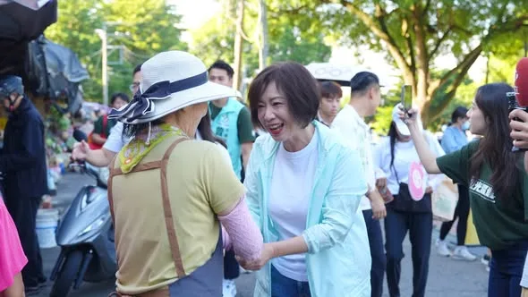
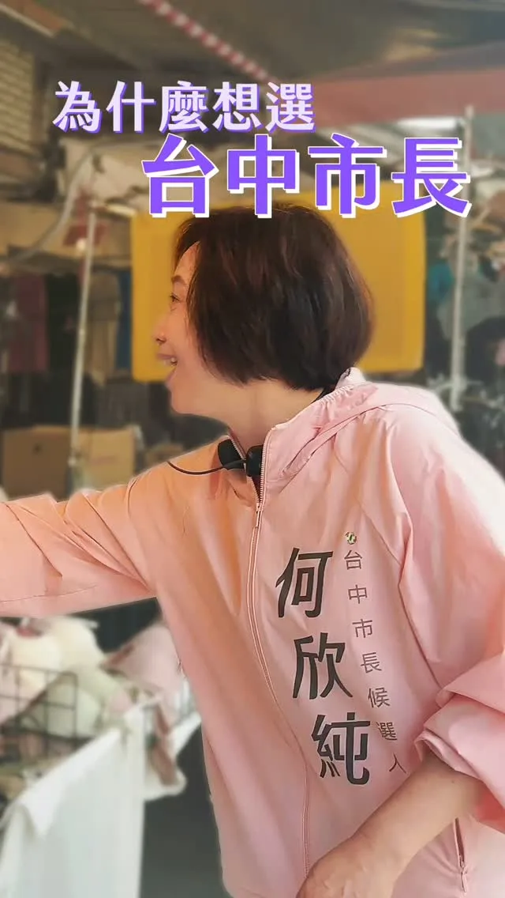
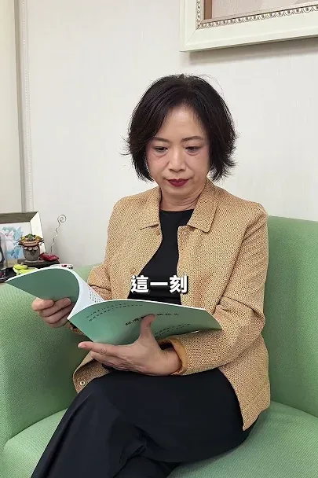
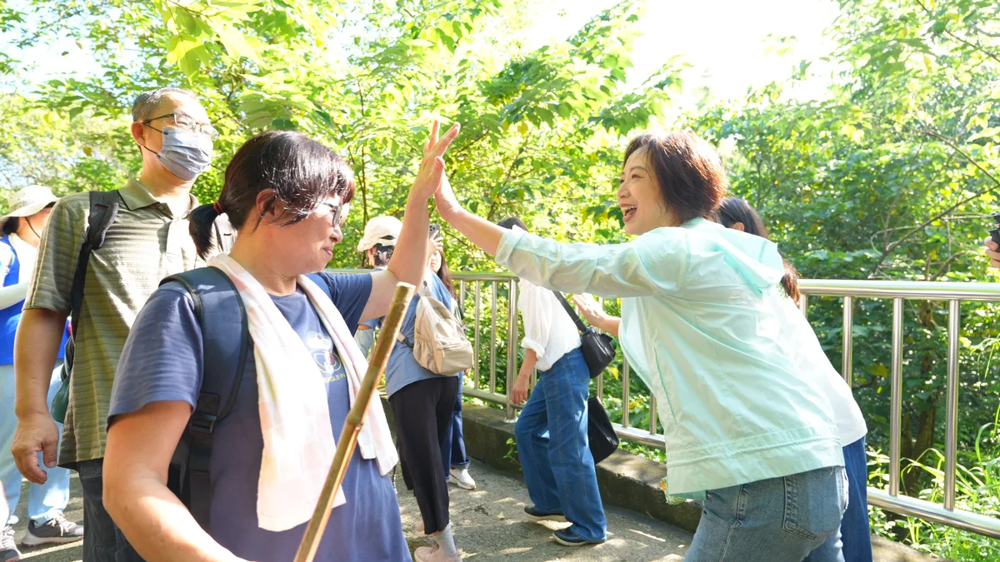
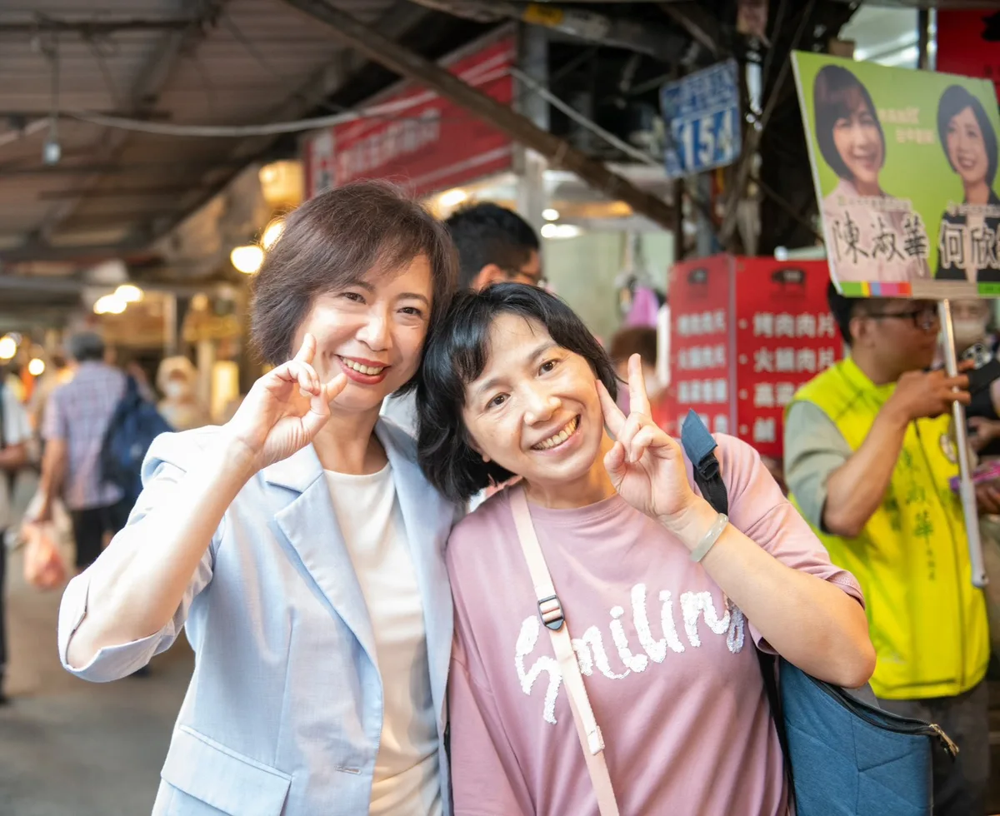
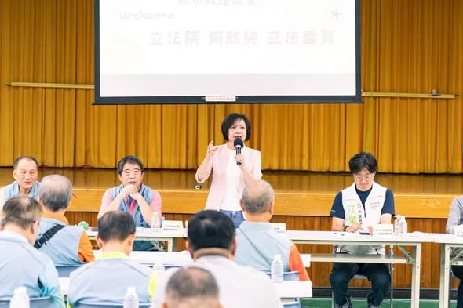

何欣純a_chun1973

@a_chun1973:大家晚安🌛 明天繼續馬不停蹄，走訪台中各區和大家見面！歡迎台中純派來相會～ 📅9/1（二） 07:00 📍豐樂雕塑公園（文心南五路一段331號） 08:10 📍大進市場（大墩六街161號） 08:40 📍南屯市場（南屯路2段595號） 17:30 📍建國北黃昏市場（建國北路一段149號） 19:40 📍忠孝夜市（台中路忠孝路口） 明天見！期待和純派相遇🙌
Accounts
| 平台 | 帳號 | 已收錄貼文 | 最後更新 |
|---|---|---|---|
| 官網 | https://a-chun.tw/ | 14 | 2026-08-26 15:00 |
| https://www.facebook.com/94achun/ | 100 | 2026-08-30 15:23 | |
| https://www.instagram.com/a_chun1973/ | 62 | 2026-08-31 18:37 | |
| Threads | https://www.threads.com/@a_chun1973 | 110 | 2026-08-31 20:44 |
| YouTube | https://www.youtube.com/channel/UCFcDN6t7tJ7qObwtyBQHdRg | 116 | 2026-08-31 18:15 |
| LINE 官方帳號 | https://page.line.me/beu1231o | 0 | — |
Timeline
顯示 402 / 402 則
@a_chun1973:大家晚安🌛 明天繼續馬不停蹄，走訪台中各區和大家見面！歡迎台中純派來相會～ 📅9/1（二） 07:00 📍豐樂雕塑公園（文心南五路一段331號） 08:10 📍大進市場（大墩六街161號） 08:40 📍南屯市場（南屯路2段595號） 17:30 📍建國北黃昏市場（建國北路一段149號） 19:40 📍忠孝夜市（台中路忠孝路口） 明天見！期待和純派相遇🙌

台中青年佔1/4！何欣純 留下青年幫青年追夢
台中三個落差 何欣純用三個第一來解！阿純號設計秘密也公開
@a_chun1973:謝謝大家！ 用阿妹的歌來表達心境： 你是我的姊妹，你是我的baby 不管相隔多遠！😘 你是我的姊妹，你是我的baby 珍愛這份感覺！❤️
#心純姐妹會 正式成立！ 超過一千名姐妹從大台中各地來到現場，現場座無虛席，甚至還緊急加開場廳與座椅，大家加油聲一波接一波，讓我感受到滿滿的支持與力量。 每一位溫柔堅韌的姐妹，都是民主的花朵，也是地方最溫暖的夥伴，未來我們會一起走進大台中29區，讓民主花朵在台中各地綻放。 姐妹們最了解家庭需要，也最清楚市民生活大小事，未來我將從大家最關心的事情出發，用「行動、溫度、創新」帶領台中力拚三個第一： ✨ 捷運路網推動效率第一 ✨ 全齡照顧六星福利第一 ✨ 無人載具產業聚落第一 從生育、長輩照顧，到孩子每天的營養午餐，都要照顧得更周全，而且我還要在財政許可並經市議會通過下，推動 #普發現金 ，讓市民共享城市發展紅利。 選戰最後90天，謝謝每一位姐妹的相挺，讓我們繼續堅定同行、團結努力，一起開創欣欣向榮的新台中！ #心存大台中 #市長換欣_台中創新

走進大坑9號步道，和大家一起健走、流流汗，也感受大坑滿滿的自然活力🌿🥾 大坑有好山、好風景，更有豐富的生態、歷史文化和農特產品，是台中珍貴的城市瑰寶。但要讓更多人走進大坑，交通一定要更方便！ 我承諾：捷運綠線延伸大坑，首任四年一定動工、力拚完工！ 未來更要串聯公車路網，完善最後一哩路，讓捷運帶動人潮，也帶動大坑整體觀光發展。 讓交通建設串起好山、好景、好生活，讓更多人看見大坑，也看見台中的美好❤️

@a_chun1973:何欣純為什麼想參選台中市長？ 我看到區域發展不均衡的問題，平平都住在台中，怎麼過的生活不一樣？ 一個城市不該因為住在哪裡，決定了一個人的生活品質。 一個強烈的念頭：台中值得更好的未來！

@a_chun1973:來到西屯水堀頭黃昏市場，和大家見面、聊聊天👋 從攤商熱情的招呼，再到鄉親一句句「加油」，都讓我感受到滿滿的溫暖。 謝謝每一位給我鼓勵及建議的朋友，未來我會繼續走遍台中各個角落，多聽、多看、多了解，和大家一起把台中變得更好！

@a_chun1973:看到謝金河董事長感嘆發文「誰在阻擋台灣的無人機產業？」 我深有同感，且為台中傳產及無人機業者感到憂心忡忡！ 2400億元的無人載具條例通過，謝董認為，如果這個法案對產業發展有利，那麼資本市場一定強烈大漲回應，不過，股市卻大跌回應，尤其一些代表性的個股都跌很重。這顯示，無人載具條例雖通過，但卻內藏重重機關，也讓無人機產業發展備受波折。 謝董話鋒一轉，台灣發展無人機產業，除了國防需求之外，也是產業陷入瓶頸的傳統產業轉型的新契機，尤其是台中市的工具機產業、五金零件產業等，但，事關台灣生存的最大敵人卻使盡全力封鎖這些產業。 謝董很感慨，只有台灣最奇怪，生活在這塊土地上的人，他們愛別人的國家，而且還拿刀捅自己！這是台灣的最不幸！ 我非常認同謝董所言，勞工、產業、與民意都清楚表示，台灣應該在國家安全下、經濟、民生、產業繼續往前大步發展，身為國會議員，為所當為、言所當言。如果只是口惠實不至、閃躲不表態，就是默許丶眼睜睜看著台中產業被扼殺。 我遺憾、也很難過，但我不會放棄、我要繼續拚搏，為這片土地為產業的未來而努力！

🌶️ 身為資深辣椒系選手，這題我應該很可以吧？ 辦公室同仁居然準備了五款常見辣椒醬，要我來場蒙眼盲猜大挑戰！ 究竟我這個「辣椒專家」是真材實料，還是辣到翻車？看下去就知道🔥 辣純派集合！

從首投族手中接下市長參選登記表，我感受到的，是年輕世代對台中的期待。謝謝「青純力應援團」給我滿滿的建言與鼓勵❤️ 台中應該是一座讓年輕人有舞台、有機會、更有未來的城市！因此，我提出三項青年行動： 🎯 成立 #青年局 🎯 打造「山海屯城青創基地／創客中心」 🎯 成立「AI創新人才研習所」 我要和年輕朋友一起拚、一起衝，用年輕的力量帶動城市向前，讓台中持續欣欣向榮 🌱✨

@a_chun1973:今天我從首投族手中接下「市長參選登記表」。薄薄的一張紙，承載的卻是年輕世代對台中的期待❤️ 感謝「青純力應援團」為我加油，也謝謝每一位台中純派，成為我最堅定的靠山！ 台中20至39歲青年超過全市人口四分之一，我希望年輕人不只留得下來，更能在台中勇敢追夢。因此，我提出三項青年行動： 🔹 成立青年局｜整合就學、就業、創業與國際交流資源 🔹 打造山海屯城青創基地｜提供共享空間、創業育成，支持青年走向國際 🔹 成立AI創新人才研習所｜補助AI數位工具，讓青年掌握新科技、提升競爭力 年輕人的未來，就是台中的未來。我要用行動、溫度、創新，陪青年一起把夢想留在台中、把台中變得更好！ 也邀請大家 9月2日星期三上午，一起到豐樂公園綜合活動中心，陪我正式登記參選台中市長💪💚

何欣純為什麼想參選台中市長？
選戰最後90天，謝謝每一位姐妹的相挺，讓我們繼續堅定同行、團結努力，一起開創欣欣向榮的新台中！ 超過一千名姐妹從大台中各地來到現場，現場座無虛席，甚至還緊急加開場廳與座椅，大家加油聲一波接一波，讓我感受到滿滿的支持與力量。 姐妹們最了解家庭需要，也最清楚市民生活大小事，未來我將從大家最關心的事情出發，用「行動、溫度、創新」帶領台中力拚三個第一： ✨ 捷運路網推動效率第一 ✨ 全齡照顧六星福利第一 ✨ 無人載具產業聚落第一 不只如此，我還要在財政許可並經市議會通過下，推動 #普發現金 ，讓市民共享城市發展紅利。

@a_chun1973:🥾 週末健走大坑，未來搭捷運來爬山不是夢！ 今天來到大坑9號步道，和大家一起走走、流流汗，也感受大坑的好山好風景🌿 大坑是台中的城市瑰寶，要讓更多人來走走，交通一定要更方便！ 🚇 捷運綠線延伸大坑，我承諾首任四年一定動工、力拚完工！ 未來串聯捷運、公車與周邊景點，讓大家搭捷運就能來爬山，也讓交通帶動大坑觀光發展。
不用飛釜山！何欣純爭取6000萬，讓梧棲漁港變國際觀光漁港
何欣純為什麼想參選台中市長？ 我看到區域發展不均衡的問題，平平都住在台中，怎麼過的生活不一樣？ 一個城市不該因為住在哪裡，決定了一個人的生活品質。 一個強烈的念頭：台中值得更好的未來！

來到西屯水堀頭黃昏市場，和大家見面、聊聊天👋 從攤商熱情的招呼，再到鄉親一句句「加油」，都讓我感受到滿滿的溫暖。 謝謝每一位給我鼓勵及建議的朋友，未來我會繼續走遍台中各個角落，多聽、多看、多了解，和大家一起把台中變得更好！

古蹟可以不只是古蹟！何欣純談英國求學悟出的活化小tips

勞工朋友的辛苦，我一直放在心上。 近日和台中市總工會理事長謝宗佑及各職業工會代表座談，傾聽第一線勞工需求，討論如何進一步保障勞工權益。 針對工會代表反映的老人健保眷屬保費問題，未來我會進一步盤點市府可以協助的空間，和中央攜手減輕勞工家庭負擔，讓勞工朋友獲得更完整的照顧與保障。 我也提出「六心勞工政見」：顧健康、穩就業、安心托、增創能、強職安、欣樂齡，從工作到生活，照顧勞工每一個人生階段。 未來我會和工會並肩努力，做勞工最堅實的後盾，打造一座友善勞工的「欣好台中市」！ #心存大台中 #市長換欣_台中創新

@a_chun1973:從首投族手中接下市長參選登記表，我感受到的，是年輕世代對台中未來的期許。特別謝謝「青純力應援團」給我滿滿的建言與鼓勵❤️ 台中應該是一座讓年輕人有舞台、有機會、更有未來的城市！因此，我提出三項青年行動： 🎯 成立「青年局」 🎯 打造「山海屯城青創基地／創客中心」 🎯 成立「AI創新人才研習所」 我要和年輕朋友一起拚、一起衝，用年輕的力量帶動城市向前，讓台中持續欣欣向榮 🌱✨

今天我從首投族手中接下「市長參選登記表」。薄薄的一張紙，承載的卻是年輕世代對台中的期待❤️ 感謝「青純力應援團」為我加油，也謝謝每一位台中純派，成為我最堅定的靠山！ 台中20至39歲青年超過全市人口四分之一，我希望年輕人不只留得下來，更能在台中勇敢追夢。因此，我提出三項青年行動： 🔹 成立青年局｜整合就學、就業、創業與國際交流資源 🔹 打造山海屯城青創基地｜提供共享空間、創業育成，支持青年走向國際 🔹 成立AI創新人才研習所｜補助AI數位工具，讓青年掌握新科技、提升競爭力 年輕人的未來，就是台中的未來。我要用行動、溫度、創新，陪青年一起把夢想留在台中、把台中變得更好！ 也邀請大家 9月2日星期三上午，一起到豐樂公園綜合活動中心，陪我正式登記參選台中市長💪💚
@a_chun1973:開學囉！ 😀😀 今天，是台中不分公私立國中小，孩子通通享有免費營養午餐的第一天。 盧市長賣力宣傳：開學第一週三天雙主菜，開學日還有「L形大雞腿」。 孩子開心、家長當然樂見，但大家更納悶：「很棒啊！ 為什麼只有一週？」 很多市民朋友跟我說：「阿純，你根本是政策許願池，你提出的政見，市府沒多久就跟上！」 敬老愛心卡、腸病毒疫苗補助、免費營養午餐……台中明明早就可以做，為什麼等阿純提出來才做？ 台中值得最好的政策牛肉，孩子更值得。 我最早提出「不分公私立國中小，營養午餐通通免費」。 當初盧市長以財源困難為由沒有採納，直到台北、高雄陸續推動，盧市長才急轉彎、趕忙上車跟進。 我進一步提出「2380大升級營養午餐計畫」：營養午餐免費、每週2天鮮乳、寒暑假不中斷，3天鮮果，每餐補助提高到80元，讓孩子天天攝取營養、健康成長。 「何欣純許願池」果然再現，盧市長開學首週加碼大放送。 但，下週呢？ 孩子的營養健康，不該當作瞬間的政治煙火秀。 因為真正好的政策，應該長期、穩定、持續照顧孩子。
@a_chun1973:選戰最後90天，謝謝每一位姐妹的相挺，讓我們繼續堅定同行、團結努力，一起開創欣欣向榮的新台中！ 超過一千名姐妹從大台中各地來到現場，現場座無虛席，甚至還緊急加開場廳與座椅，大家加油聲一波接一波，讓我感受到滿滿的支持與力量。 姐妹們最了解家庭需要，也最清楚市民生活大小事，未來我將從大家最關心的事情出發，用「行動、溫度、創新」帶領台中力拚三個第一： ✨ 捷運路網推動效率第一 ✨ 全齡照顧六星福利第一 ✨ 無人載具產業聚落第一 不只如此，我還要在財政許可並經市議會通過下，推動 #普發現金 ，讓市民共享城市發展紅利。
🥾 週末健走大坑，未來搭捷運來爬山不是夢！ 今天來到大坑9號步道，和大家一起走走、流流汗，也感受大坑的好山好風景🌿 大坑是台中的城市瑰寶，要讓更多人來走走，交通一定要更方便！ 🚇 捷運綠線延伸大坑，我承諾首任四年一定動工、力拚完工！ 未來串聯捷運、公車與周邊景點，讓大家搭捷運就能來爬山，也讓交通帶動大坑觀光發展。
何欣純為什麼想參選台中市長？ 我看到區域發展不均衡的問題，平平都住在台中，怎麼過的生活不一樣？ 一個城市不該因為住在哪裡，決定了一個人的生活品質。 一個強烈的念頭：台中值得更好的未來！
6000萬改造梧棲漁港！親子食漁＋海景咖啡

競選總部9/12成立！馬戲團＋文化復興＋青年局 阿純大公開

@a_chun1973:辦公室同仁準備五款常見辣椒醬，要我來場盲猜大挑戰！ 🌶️ 身為無辣不歡的資深辣椒系選手（？），這題對我來說應該只是桌頂拈柑（toh-tíng ni-kam）而已吧～ 👇 辣純派集合！留言推薦你心中的必吃辣椒／辣椒醬吧！
台中毛孩38萬！何欣純「寵愛毛孩5大安心」＋500元寵物券一次講